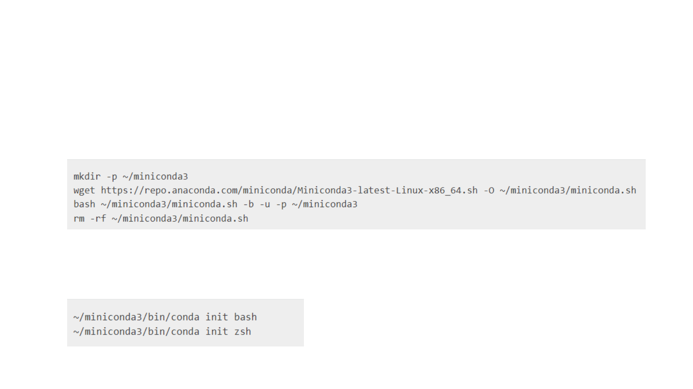
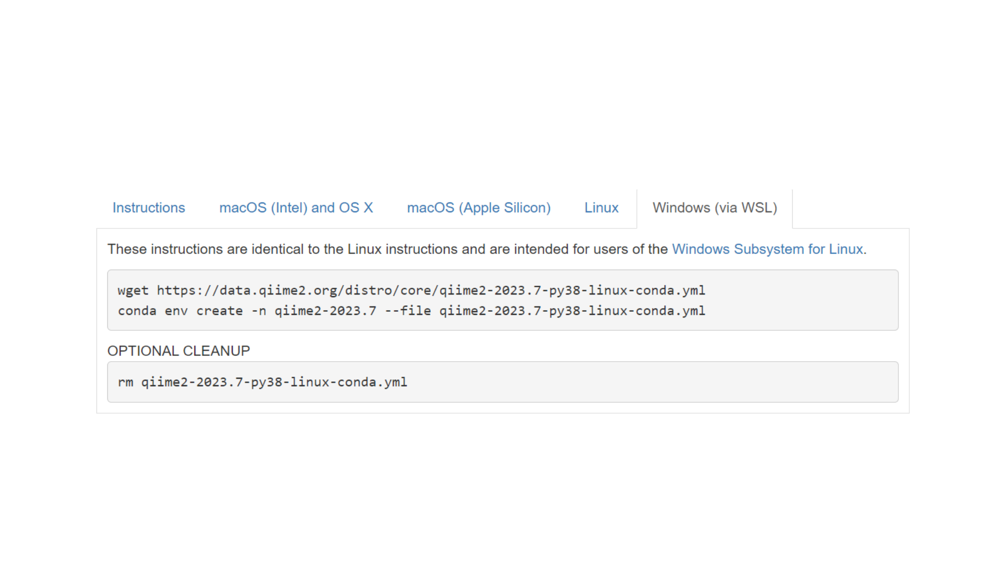
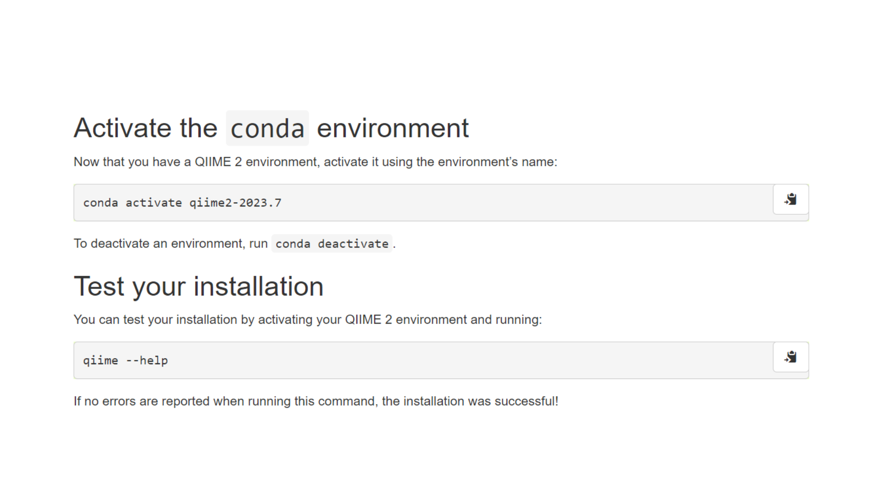
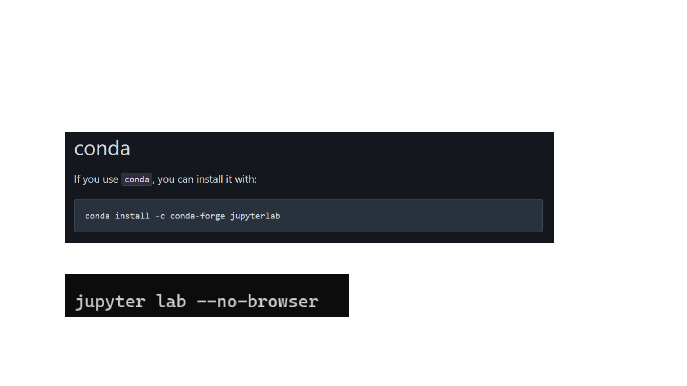
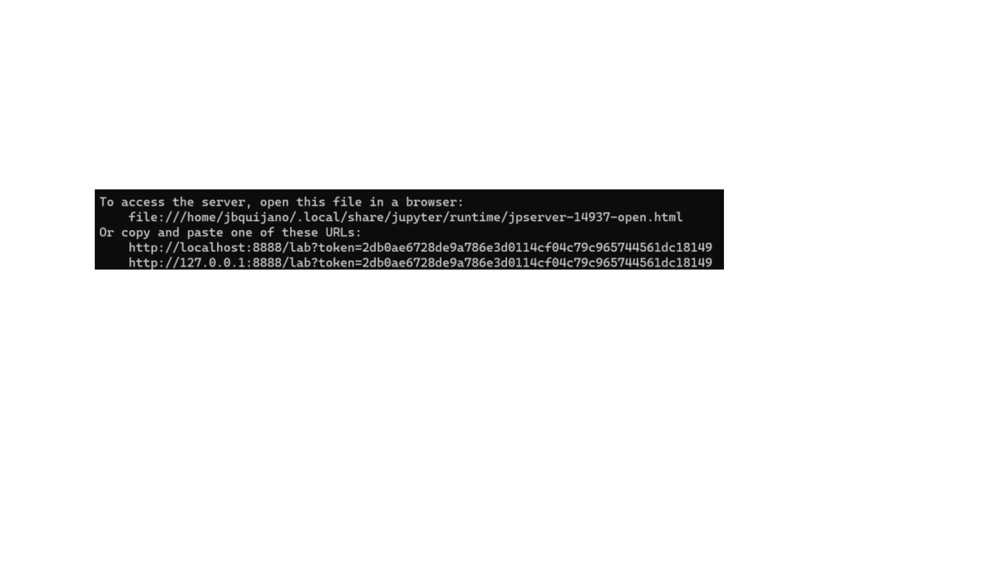

Installing QIIME2 in Windows

Install WSL
• Open PowerShell or Windows Command Prompt in
administrator mode by right-clicking and selecting "Run as
administrator”
• Note: Ubuntu will be installed as a default.

Install Miniconda
• Run WSL
• In your WSL, run the following codes:
• After installing, initialize your newly-installed Miniconda. The
following commands initialize for bash and zsh shells:

Install QIIME2
• Once Miniconda is installed, install QIIME2

Activate QIIME2 conda environment

Install JupyterLab, our IDE of choice
• Install jupyterlab through conda
• Run jupyterlab

Open JupyterLab
• Do all your codes in jupyterlab
• Copy-paste the link on a browser of your choice or Ctrl + left
click.